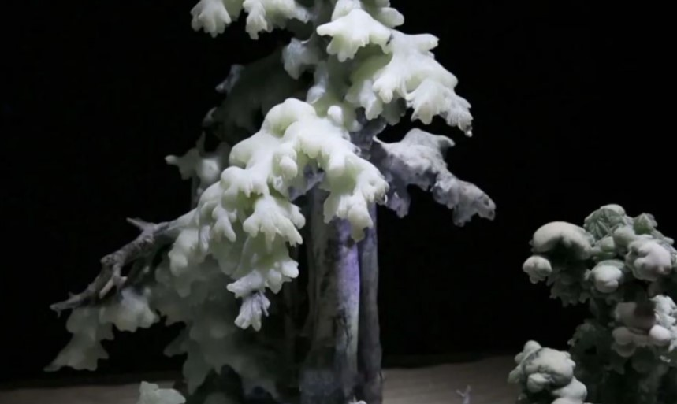

唐帅：“在玉雕创作的前十年，我都是做小桥流水人家，偶然间就碰见了一种材料，就是这种黑白料。这种黑白料实际上在岫岩也不多，偶然有人给我看这种材料，我比较喜欢，当时做什么我还不太清楚，我觉得首先这种颜色吸引了我。”
黑白料在岫玉中比较稀少，颜色也十分有特点。唐帅独具慧眼，陆续搜集到相当数量的这种非主流玉料。如何化璞玉为神品，唐帅一直苦苦寻找创作灵感。一次到南方出差，一首《家在东北》的歌，唱出了唐帅心中的浓浓乡愁，他的思绪飞回了家乡。唐帅：“《家在东北》MV就让我联想到白山黑水，就马上瞬间联想到我手里这些材料。”
从南方回到岫岩之后，唐帅立刻率创作团队去雪乡采风。由此拉开了“家在东北”系列玉雕作品的构思、创作。唐帅：“我要表达白山黑水，我把东北的奇观、意境，这种民俗、风貌全部表达出来。”
以唐帅为核心的40人创作团队，经过5年的呕心沥血，白山黑水的冰雪奇观、风土人情，终于栩栩如生地呈现在一件件作品上。